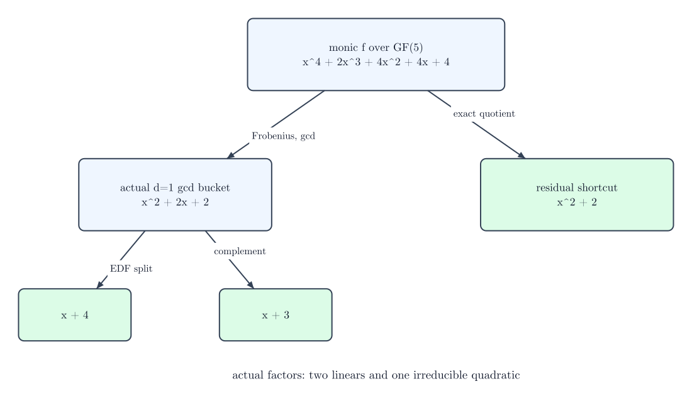
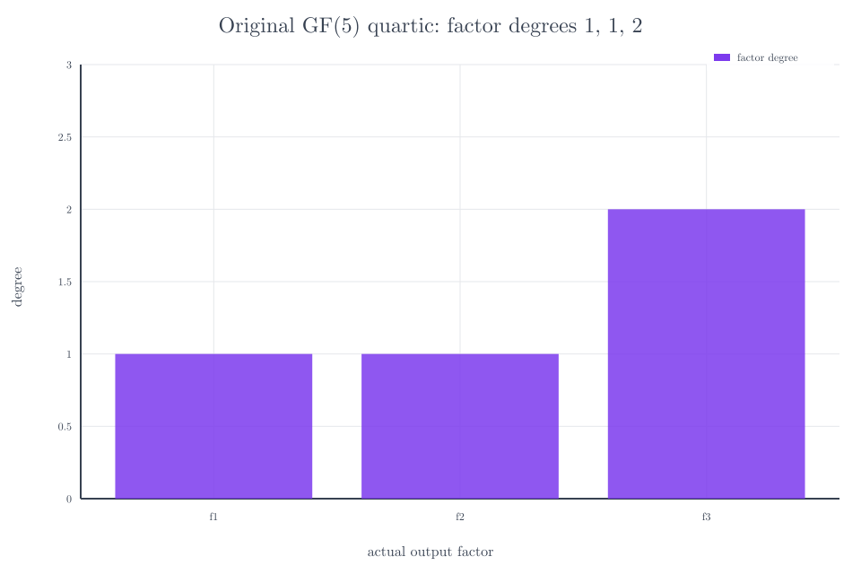
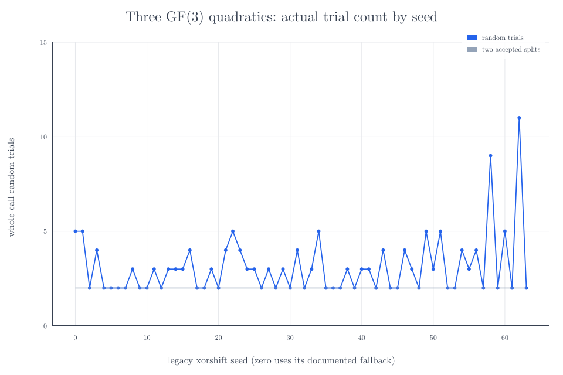

Cantor–Zassenhaus: Actual Degree Buckets, Random Splits and Exact Checks
Abstract
Factoring a polynomial over a prime field asks for irreducible factors whose product recovers its coefficients, including any leading unit. Reconstruction alone cannot establish irreducibility. We retain the original quartic over GF(5) and its factor-degree plot, inspect actual distinct-degree and randomized same-degree splits, and verify both reconstruction and irreducibility. Reusable arithmetic and formatting now live in datamunge. The checked implementation rejects invalid fields and repeated factors, preserves the legacy seeded stream, and avoids a wrapped p-to-the-d exponent. Native traces expose actual work and complete-call caps. This is a squarefree odd-prime-field implementation, without squarefree decomposition or a characteristic-two randomized splitter.
The original quartic: one actual degree test and a residual shortcut
Over GF(5), use f=(x-1)(x-2)(x*x+2). The coefficient vector is [4,4,4,2,1], in increasing power order. The quadratic is irreducible: squares in GF(5) are 0,1,4, while x*x=-2 would require the nonsquare 3. The native trace performs one distinct-degree test at d=1. Its gcd collects both linear factors into x*x+2*x+2. Dividing leaves x*x+2; the remaining polynomial is already too small to contain two factors of the next possible degree, so it is emitted directly. There is no executed d=2 gcd in this example.
#include <dm/dm.hpp>
int main() {
std::filesystem::create_directories("build");
const auto linears=dm::algorithms::poly_multiply_gf({4,1},{3,1},5);
const auto f=dm::algorithms::poly_multiply_gf(linears,{2,0,1},5);
const auto trace=dm::algorithms::cantor_zassenhaus_trace(f,5);
if(f!=dm::algorithms::GFPoly{4,4,4,2,1} || trace.distinct_degree.size()!=1 || trace.factors.size()!=3) return 1;
const auto& step=trace.distinct_degree[0];
std::print("Input: {}.\n\n| tested degree | remaining before | actual Frobenius remainder | actual gcd bucket | remaining after |\n"
"| ---: | :--- | :--- | :--- | :--- |\n",dm::algorithms::poly_string_gf(f,5));
std::print("| {} | {} | {} | {} | {} |\n",step.degree,dm::algorithms::poly_string_gf(step.remaining_before,5),
dm::algorithms::poly_string_gf(step.frobenius,5),dm::algorithms::poly_string_gf(step.bucket,5),
dm::algorithms::poly_string_gf(step.remaining_after,5));
dm::graphics::Diagram diagram(65,1100);
dm::graphics::DiagramNodeStyle node;node.width=6.4;node.height=1.8;
diagram.node("input",{0,0},std::format("monic f over GF(5)\n{}",dm::algorithms::poly_string_gf(trace.monic_input,5)),node);
node.width=4.8;node.height=1.8;
diagram.node("bucket",{-5,-3.5},std::format("actual d={} gcd bucket\n{}",step.degree,dm::algorithms::poly_string_gf(step.bucket,5)),node);
node.fill={220,252,231};
diagram.node("residual",{5,-3.5},std::format("residual shortcut\n{}",dm::algorithms::poly_string_gf(trace.residual,5)),node)
.edge("input","bucket","Frobenius, gcd").edge("input","residual","exact quotient");
node.width=2.8;node.height=1.3;
diagram.node("left",{-7.5,-6.5},dm::algorithms::poly_string_gf(trace.factors[0],5),node)
.node("right",{-2.5,-6.5},dm::algorithms::poly_string_gf(trace.factors[1],5),node)
.edge("bucket","left","EDF split").edge("bucket","right","complement")
.text({0,-8},"actual factors: two linears and one irreducible quadratic",19)
.save_svg("build/cantor_zassenhaus_method.svg");
std::print("\nActual DDF steps: {}; random attempts: {}; modular polynomial products: {}; gcd requests: {}.\n",
trace.work.distinct_degree_steps,trace.work.random_trials,trace.work.modular_products,trace.work.gcd_calls);
}Input: x4 + 2x3 + 4x^2 + 4x + 4.
| tested degree | remaining before | actual Frobenius remainder | actual gcd bucket | remaining after |
|---|---|---|---|---|
| 1 | x4 + 2x3 + 4x^2 + 4x + 4 | 4x^2 + 4x + 3 | x^2 + 2x + 2 | x^2 + 2 |
Actual DDF steps: 1; random attempts: 6; modular polynomial products: 10; gcd requests: 8.

Why does the degree test work? Over GF(p), x to the p-to-the-d minus x is the product of all monic irreducibles whose degrees divide d, without repeats. Once smaller degrees have been removed, the next gcd therefore extracts only degree-d factors. The implementation carries one Frobenius iterate forward, reducing it when the remaining modulus shrinks:
If the remaining degree becomes less than 2*d while every remaining irreducible has degree at least d, there cannot be two remaining factors. This proves the residual shortcut. These statements concern polynomial arithmetic, not a promise that forming or manipulating large powers is free. The native method uses modular powering throughout. See [Shoup, Chapter 20](https://shoup.net/ntb/ntb-v2.pdf).
Preserve the degree bars, and verify more than reconstruction
The original bars have heights 1,1,2. We regenerate them from the actual output order, which can vary with the seed, and call the native irreducibility test on every returned factor. Native multiplication replaces the report-local product helper; native formatting replaces its polynomial-to-string implementation. As a control, the single-element list [f] reconstructs f immediately, although its only member is reducible. Multiplication alone would accept that false factorization. The separate irreducibility check is essential.
#include <dm/dm.hpp>
int main() {
std::filesystem::create_directories("build");
const dm::algorithms::GFPoly f{4,4,4,2,1};
const auto factors=dm::algorithms::cantor_zassenhaus(f,5);
dm::algorithms::GFPoly product{1};std::vector<double> degrees;std::vector<std::string> labels;
std::print("| factor | normalized coefficients | degree | independently called irreducibility test |\n"
"| :--- | :--- | ---: | :--- |\n");
for(std::size_t i=0;i<factors.size();++i) {
const auto& factor=factors[i];const bool irreducible=dm::algorithms::poly_is_irreducible_gf(factor,5);
if(!irreducible) return 1;
product=dm::algorithms::poly_multiply_gf(product,factor,5);
degrees.push_back(factor.size()-1);labels.push_back(std::format("f{}",i+1));
std::print("| {} | {} | {} | {} |\n",dm::algorithms::poly_string_gf(factor,5),factor,factor.size()-1,irreducible);
}
if(product!=f) return 1;
std::print("\nProduct: {}. Reconstructs f: {}.\n",dm::algorithms::poly_string_gf(product,5),product==f);
std::print("Single candidate [f]: reconstructs {}, but irreducible {}.\n",dm::algorithms::poly_multiply_gf({1},f,5)==f,
dm::algorithms::poly_is_irreducible_gf(f,5));
dm::graphics::RPlot::barplot(degrees,labels,"factor degree",dm::RGB{124,58,237})
.title("Original GF(5) quartic: factor degrees 1, 1, 2")
.x_label("actual output factor").y_label("degree").y_limits(0,3)
.save_svg("build/cantor_zassenhaus.svg");
}| factor | normalized coefficients | degree | independently called irreducibility test |
|---|---|---|---|
| x + 4 | [4, 1] | 1 | true |
| x + 3 | [3, 1] | 1 | true |
| x^2 + 2 | [2, 0, 1] | 2 | true |
Product: x4 + 2x3 + 4x^2 + 4x + 4. Reconstructs f: true. Single candidate [f]: reconstructs true, but irreducible false.

The irreducibility API uses repeated Frobenius gcds to exclude every possible irreducible degree up to half the input degree. A reducible polynomial must have such a factor. For the native tests, an additional, separate monic trial-division oracle establishes factor multisets on small fields, so validation does not rely only on calling another production function that shares arithmetic kernels.
Same-degree splitting: inspect attempts, then vary the seed
The quadratic bucket (x*x+1)(x*x+x+2) over GF(3) contains two irreducibles of degree d=2. Random h may share a proper gcd with the bucket, which gives an immediate split. Otherwise the algorithm computes its quadratic character in each extension field and takes another gcd:
In an ideal uniform sample conditioned on nonzero residues in all k component fields, the characters are independent signs. Only the all-positive and all-negative patterns fail to separate them, so this model's nontrivial-split probability is \(1-2^{1-k}\). The implementation retains the existing modulo-reduced xorshift64 stream and rejects constant candidates. Its samples are deterministic and slightly biased. The ideal model does not prove a termination or expected-time bound for every fixed seed of this implementation.
The table records one actual two-quadratic run. The plot then varies 64 seeds for the product of all three monic irreducible quadratics over GF(3). At least two accepted binary splits are needed, while retries and discarded constant candidates add work. Trial counts, raw-word counts and modular products measure different operations; none is a wall-clock timing.
#include <dm/dm.hpp>
int main() {
std::filesystem::create_directories("build");
const auto pair=dm::algorithms::poly_multiply_gf({1,0,1},{2,1,1},3);
const auto trace=dm::algorithms::cantor_zassenhaus_trace(pair,3);
std::print("| attempt | target degree | sampled coefficients | initial gcd | used character | character coefficients | proposed gcd | accepted |\n"
"| ---: | ---: | :--- | :--- | :--- | :--- | :--- | :--- |\n");
for(const auto& trial:trace.equal_degree)
std::print("| {} | {} | {} | {} | {} | {} | {} | {} |\n",trial.attempt,trial.target.size()-1,trial.candidate,
trial.initial_gcd,trial.used_character,trial.character,trial.split_gcd,trial.accepted);
const auto three=dm::algorithms::poly_multiply_gf(pair,{2,2,1},3);
std::vector<double> seeds,trials;std::size_t minimum=std::numeric_limits<std::size_t>::max(),maximum=0;
std::print("\n| seed | random trials | raw words | modular products | gcd requests | factors |\n"
"| ---: | ---: | ---: | ---: | ---: | ---: |\n");
for(std::uint64_t seed=0;seed<64;++seed) {
dm::algorithms::CantorZassenhausOptions options;options.seed=seed;options.max_random_trials=1000;
const auto run=dm::algorithms::cantor_zassenhaus_trace(three,3,options);
dm::algorithms::GFPoly product{1};for(const auto& factor:run.factors) {
if(!dm::algorithms::poly_is_irreducible_gf(factor,3) || factor.size()!=3) return 1;
product=dm::algorithms::poly_multiply_gf(product,factor,3);
}
if(product!=three || run.factors.size()!=3 || run.work.random_trials<2) return 1;
seeds.push_back(seed);trials.push_back(run.work.random_trials);
minimum=std::min(minimum,run.work.random_trials);maximum=std::max(maximum,run.work.random_trials);
if(seed<8) std::print("| {} | {} | {} | {} | {} | {} |\n",seed,run.work.random_trials,run.work.random_words,
run.work.modular_products,run.work.gcd_calls,run.factors.size());
}
std::print("\nAll 64 seeds reconstruct three irreducible quadratics; random-trial range {} to {}.\n",minimum,maximum);
dm::graphics::RPlot::create().line(seeds,trials,"random trials",{37,99,235},1.8)
.points(seeds,trials,"",{37,99,235},3).line({0,63},{2,2},"two accepted splits",{148,163,184},1.5)
.title("Three GF(3) quadratics: actual trial count by seed")
.x_label("legacy xorshift seed (zero uses its documented fallback)").y_label("whole-call random trials")
.y_limits(0,static_cast<double>(maximum)+4).save_svg("build/cantor_zassenhaus_trials.svg");
}| attempt | target degree | sampled coefficients | initial gcd | used character | character coefficients | proposed gcd | accepted |
|---|---|---|---|---|---|---|---|
| 0 | 4 | [] | [] | false | [] | [] | false |
| 1 | 4 | [2, 0, 1] | [1] | true | [1, 2, 0, 2] | [1, 0, 1] | true |
| seed | random trials | raw words | modular products | gcd requests | factors |
|---|---|---|---|---|---|
| 0 | 5 | 24 | 31 | 13 | 3 |
| 1 | 5 | 24 | 21 | 10 | 3 |
| 2 | 2 | 10 | 11 | 6 | 3 |
| 3 | 4 | 18 | 16 | 9 | 3 |
| 4 | 2 | 10 | 16 | 7 | 3 |
| 5 | 2 | 10 | 6 | 5 | 3 |
| 6 | 2 | 10 | 11 | 6 | 3 |
| 7 | 2 | 10 | 16 | 7 | 3 |
All 64 seeds reconstruct three irreducible quadratics; random-trial range 2 to 11.

Avoid the wrapped exponent: a near-INT64-limit field
The old code materialized pd in uint64 before forming (pd-1)/2. That wraps even for modest d. Instead set c=h^((p-1)/2) modulo g and use
Induction gives e_j=(pj-1)/2. Only scalar exponents p and (p-1)/2 are passed to modular powering, so pd is never stored. This algebraic recurrence works in the quotient ring even if h has zero residues; the initial gcd route already handles proper shared factors.
Take p=9,223,372,036,854,775,783, an odd prime near the signed-64-bit limit. Since p is 7 modulo 8, both -1 and -2 are nonsquares, so x*x+1 and x*x+2 are irreducible quadratics. Their product requires d=2 character splitting, where p*p is far beyond uint64. The program factors it with bounded work and checks both factors and reconstruction. Coefficient sums/products are also widened before reduction, fixing separate signed-overflow paths.
#include <dm/dm.hpp>
int main() {
constexpr std::int64_t p=9223372036854775783LL;
const dm::algorithms::GFPoly first{1,0,1},second{2,0,1};
const auto f=dm::algorithms::poly_multiply_gf(first,second,p);
dm::algorithms::CantorZassenhausOptions options;options.max_random_trials=100;options.max_modular_products=100000;
const auto trace=dm::algorithms::cantor_zassenhaus_trace(f,p,options);
dm::algorithms::GFPoly product{1};
std::print("Prime p: {}. Input coefficients: {}.\n",p,f);
for(const auto& factor:trace.factors) {
const bool irreducible=dm::algorithms::poly_is_irreducible_gf(factor,p);
if(!irreducible || factor.size()!=3) return 1;
std::print("Factor {}: irreducible {}.\n",dm::algorithms::poly_string_gf(factor,p),irreducible);
product=dm::algorithms::poly_multiply_gf(product,factor,p);
}
if(product!=f || trace.factors.size()!=2 || trace.distinct_degree.size()!=2) return 1;
std::print("Reconstructed: {}. Actual DDF steps: {}; random trials: {}; modular power calls: {}; modular products: {}.\n",
product==f,trace.work.distinct_degree_steps,trace.work.random_trials,trace.work.modular_power_calls,trace.work.modular_products);
std::print("Large-residue product: {}.\n",dm::algorithms::poly_multiply_gf({p-1,p-1},{1,1},p));
auto exact=options;exact.max_modular_products=trace.work.modular_products;
const auto bounded=dm::algorithms::cantor_zassenhaus_with_options(f,p,exact);
bool rejected=false;--exact.max_modular_products;
try {(void)dm::algorithms::cantor_zassenhaus_with_options(f,p,exact);} catch(const std::length_error&) {rejected=true;}
if(bounded!=trace.factors || !rejected) return 1;
std::print("Exact product budget succeeds; one-short budget rejected: {}.\n",rejected);
}Prime p: 9223372036854775783. Input coefficients: [2, 0, 3, 0, 1]. Factor x2 + 2: irreducible true. Factor x2 + 1: irreducible true. Reconstructed: true. Actual DDF steps: 2; random trials: 2; modular power calls: 6; modular products: 736. Large-residue product: [9223372036854775782, 9223372036854775781, 9223372036854775782]. Exact product budget succeeds; one-short budget rejected: true.
The native test independently evaluates every recorded character in this case with an unsigned-128-bit exponent and separate modular polynomial arithmetic. Thus the large-exponent check is not merely a product reconstruction test. The public implementation itself does not need a multiword exponent container.
Units, repeated factors and complete-call caps
The original API normalizes a nonmonic input to its monic associate. Its factor product therefore loses the leading unit unless the caller restores it. The trace retains that unit. Nonzero constants return an empty factor list; zero has no such factorization and is rejected. Repeated-factor inputs are rejected using gcd(f,f'), including nonconstant polynomials with zero derivative in positive characteristic. A full factorizer would first perform squarefree decomposition and track multiplicities; this API does not. Characteristic-two arithmetic/irreducibility helpers work, but the odd-field randomized splitter rejects p=2. The [FLINT documentation](https://flintlib.org/doc/fq_poly_factor.html) describes a fuller finite-field factorization interface with those extra stages.
#include <dm/dm.hpp>
int main() {
const auto nonmonic=dm::algorithms::cantor_zassenhaus_trace({3,0,2},5);
dm::algorithms::GFPoly product{1};for(const auto& factor:nonmonic.factors) product=dm::algorithms::poly_multiply_gf(product,factor,5);
const auto restored=dm::algorithms::poly_multiply_gf(product,{nonmonic.leading_coefficient},5);
if(product!=nonmonic.monic_input || restored!=nonmonic.input) return 1;
std::print("Nonmonic input {}, unit {}, monic factor product {}, restored {}.\n",nonmonic.input,nonmonic.leading_coefficient,product,restored);
bool repeated=false;try {(void)dm::algorithms::cantor_zassenhaus({1,2,1},5);} catch(const std::invalid_argument&) {repeated=true;}
bool zero_derivative=false;try {(void)dm::algorithms::cantor_zassenhaus({1,0,0,1},3);} catch(const std::invalid_argument&) {zero_derivative=true;}
bool zero_divisor=false;try {(void)dm::algorithms::poly_divmod_gf({1},{0,5},5);} catch(const std::invalid_argument&) {zero_divisor=true;}
bool even_field=false;try {(void)dm::algorithms::cantor_zassenhaus({1,1},2);} catch(const std::invalid_argument&) {even_field=true;}
dm::algorithms::GFPoly six{1};for(std::int64_t root=0;root<6;++root) six=dm::algorithms::poly_multiply_gf(six,{-root,1},7);
const auto trace=dm::algorithms::cantor_zassenhaus_trace(six,7);
dm::algorithms::CantorZassenhausOptions options;options.max_random_trials=trace.work.random_trials-1;
bool trial_cap=false;try {(void)dm::algorithms::cantor_zassenhaus_with_options(six,7,options);} catch(const std::length_error&) {trial_cap=true;}
if(!repeated || !zero_derivative || !zero_divisor || !even_field || !trial_cap) return 1;
std::print("Rejected repeated input {}, zero-derivative repeat {}, reduced-zero divisor {}, even factorization field {}.\n",
repeated,zero_derivative,zero_divisor,even_field);
std::print("Six distinct linear factors: {} random trials; one-short whole-call trial budget rejected {}.\n",trace.work.random_trials,trial_cap);
}Nonmonic input [3, 0, 2], unit 2, monic factor product [4, 0, 1], restored [3, 0, 2]. Rejected repeated input true, zero-derivative repeat true, reduced-zero divisor true, even factorization field true. Six distinct linear factors: 6 random trials; one-short whole-call trial budget rejected true.
Both budgets are complete-call caps, checked before the excess random draw or modular polynomial product. They return no partial factor list. Zero means unlimited. The counts exclude scalar primality validation, coefficient operations, gcd/division work and wall time. Ordinary and traced APIs use the same kernel; ordinary calls keep no owned DDF/EDF records. Source coefficients are unchanged.
With schoolbook dense arithmetic, modular products and divisions have quadratic field work in degree. Incremental DDF has an O(n^3*log(p)) upper bound in this field-operation model. A character trial on a degree-m bucket with common factor degree d costs O(d*m*m*log(p)) such work, plus scalar inversions and sampling. No fast multiplication, modular composition or extension-field representation is supplied. An untraced run uses linear coefficient scratch storage; a trace retains the sum of all recorded polynomial lengths and can be much larger. No natural observational dataset is needed for these exact algebraic properties; controlled field/polynomial inputs expose them directly.
Native verification enumerates 7,800 monic inputs over GF(3), GF(5) and GF(7), with a separate monic trial-division oracle. All 6,258 squarefree cases factor correctly and all 1,542 repeated cases reject. A further 1,000 random input draws supply squarefree cases for seeded checks; 300 near-limit arithmetic cases, original division/root regressions, exact budgets, units, invalid fields/divisors and owned copies are checked. Actual Frobenius values, candidate gcds, character values, accepted complements and work-counter formulas are verified independently. Reconstruction and irreducibility are separate requirements throughout.
References
- D. G. Cantor and H. Zassenhaus (1981). [A New Algorithm for Factoring Polynomials Over Finite Fields](https://doi.org/10.1090/S0025-5718-1981-0606517-5). Mathematics of Computation 36(154), 587-592.
- V. Shoup. [A Computational Introduction to Number Theory and Algebra, version 2](https://shoup.net/ntb/ntb-v2.pdf), Chapters 17 and 20. Prime-field arithmetic, irreducibility and degree splitting.
- FLINT. [Finite-field polynomial factorization interface](https://flintlib.org/doc/fq_poly_factor.html). Complete factorization includes squarefree handling beyond this restricted API.